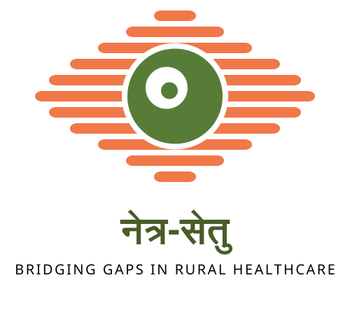

About Netra-setu (नेत्र-सेतु)
Empowering Primary Healthcare Centers (PHCs) & ASHA Workers with AI-Driven Retinal Diagnostic Gates.
Mission & Vision
Diabetic Retinopathy (DR) is a leading cause of preventable blindness in rural communities across India. Netra-setu provides a portable, dual-stage screening platform designed to operate seamlessly even in low-connectivity, non-mydriatic screening environments.
By enforcing front-line Stage A Image Quality Control before machine learning inference, Netra-setu guarantees that clinicians and automated models receive clear, diagnostically valid images—preventing false negatives and reducing unnecessary patient travel.
Dual-Stage AI Pipeline
-
01.
Stage A: Quality Gate
Evaluates Laplacian variance, Tenengrad energy, corneal glare overexposure, and field-of-view (FOV) sensor occlusion in under 150ms. -
02.
Stage B: DR Screening Engine
Classifies retinal lesions (microaneurysms, hard exudates, hemorrhages) into 5 clinical severity grades with referral recommendations.
Model Insight & Diagnostics
Real-time Tele-Ophthalmology Performance Metrics and Quality Gate Decision Boundaries.
Quality Control Parameters & Thresholds
| Quality Test | Diagnostic Metric | Threshold Limit | Clinical Correction Action |
|---|---|---|---|
| Defocus & Motion Blur | Masked Laplacian Variance / Tenengrad | Blur ≥ 6.0 | Tenengrad ≥ 60.0 | Stabilize camera with forehead rest & sharpen focus wheel |
| Field-of-View (FOV) | Retinal Disk Area Ratio | 20.0% ≤ FOV ≤ 98.0% | Re-center camera lens directly over pupil aperture |
| Illumination & Glare | Histogram Saturated Pixel Ratio | Luminance ≥ 30, Overexposure < 12% | Adjust LED flash brightness & tilt lens away from corneal flash |
Rural Tele-Ophthalmology Referral Network
Connecting Village PHC Operators directly with Tertiary District Hospitals.
District Tele-Consultation Hubs
AIIMS Apex Eye Care Center
Online (4 Specialists)Dedicated Tele-DR Review Desk | Avg Response: 15 mins
District General Hospital - Eye Department
Online (2 Specialists)Retina Specialist Triage Desk | Avg Response: 30 mins
Create Referral Alert
Transmits patient retina scans and Stage A quality reports to district specialists.
Patient Screening History
Centralized Screening Records & Diagnostic Reports
| Patient ID | Name & Age | Village / PHC | Scan Date | Stage A Gate | Stage B Diagnosis | Action Status |
|---|
Device Calibration & Lens Alignment
Ensure fundus camera attachment optics and smartphone sensors meet Stage A requirements.
Pre-Screening Optical Checklist
- ✅ Clean portable fundus camera condenser lens with microfiber cloth.
- ✅ Verify smartphone camera lens center aligns with 20D/28D lens focal point.
- ✅ Darken patient room environment to allow natural pupil dilation.
- ✅ Set LED illumination intensity to Level 2 (30-40 Lux).
Lens Target Focus Test
Align camera until the red ring matches the fundus optic disk border.